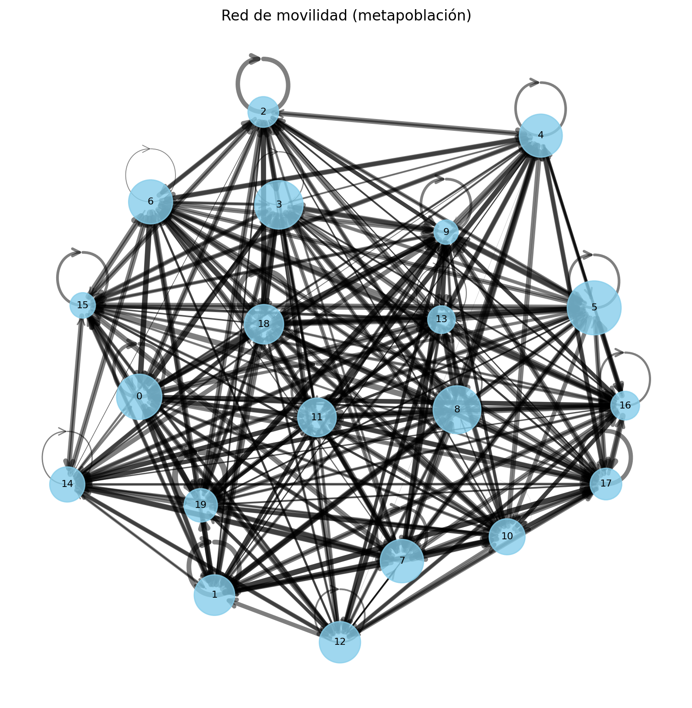
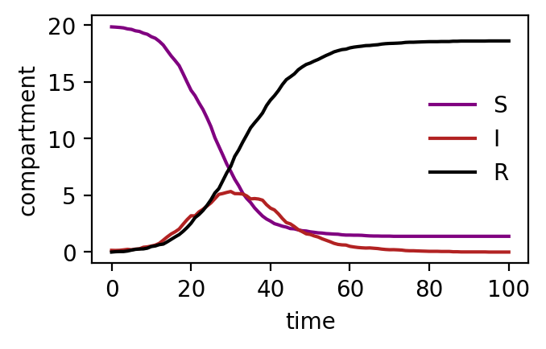
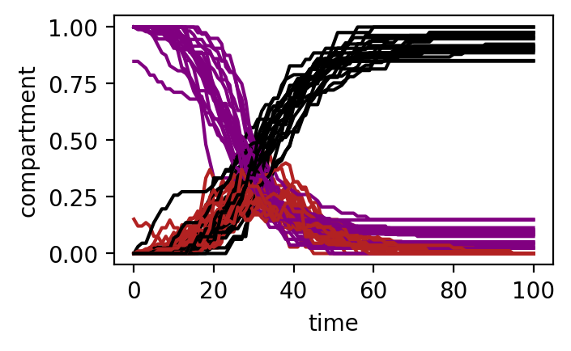

import numpy as np
import networkx as nx
import matplotlib
import matplotlib.pyplot as plt
from EpiCommute import SIRModel
matplotlib.rc('figure', dpi=200)
np.random.seed = 12341 Basic example
This notebook runs a basic parametrization of the model.
We simulate an SIR epidemic in a system of M subpopulations.
Inicialización de la metapoblación
En este bloque generamos un ejemplo sintético de una metapoblación.
Número de subpoblaciones:
M = 20
Define cuántas regiones (nodos) tendrá el sistema.Matriz de movilidad:
mobility = np.random.rand(M, M)
Se crea una matriz \(M \times M\) con valores aleatorios en ([0,1]), donde cada entrada:$(j, i) $
representa la intensidad del flujo de personas desde la región \(i\) hacia la región \(j\).
En este ejemplo, la movilidad es completamente aleatoria (no basada en datos reales).Tamaños de las subpoblaciones:
subpopulation_sizes = np.random.randint(20, 100, M)
Se asigna a cada región un tamaño poblacional entero aleatorio entre 20 y 100.
Interpretación
- Tenemos \(M\) regiones conectadas entre sí.
- Cada región tiene una población distinta.
- La matriz de movilidad define cómo se conectan las regiones mediante flujos de personas.
Este bloque construye la estructura básica sobre la que se simulará la dinámica epidémica.
M = 20 # Number of subpopulations
# Initialize a random mobility matrix
mobility = np.random.rand(M, M)
# Choose random subpopulation sizes
subpopulation_sizes = np.random.randint(20,100,M)subpopulation_sizesarray([70, 56, 32, 80, 63, 99, 66, 64, 78, 20, 44, 51, 58, 26, 42, 22, 28,
34, 53, 38])Visualización de la red de movilidad
En este bloque construimos y visualizamos una red dirigida que representa la metapoblación:
- Nodos: cada nodo corresponde a una subpoblación (región).
- Tamaño del nodo: proporcional al tamaño de la población de esa región.
- Aristas dirigidas (flechas): representan los flujos de movilidad entre regiones.
- Grosor de las aristas: proporcional a la intensidad del flujo (más grueso = mayor movilidad).
El grafo se construye con networkx a partir de la matriz de movilidad, donde cada entrada ( (i, j) ) indica el flujo desde la región (i) hacia la región (j).
Para facilitar la interpretación visual: - Se utiliza un layout tipo spring para distribuir los nodos en el espacio. - Los pesos de las aristas se normalizan para escalar su grosor. - Opcionalmente, se puede aplicar un umbral para mostrar solo las conexiones más relevantes.
Esta visualización ayuda a entender cómo la estructura de movilidad conecta las subpoblaciones y condiciona la propagación de la epidemia.
# --- Create directed graph ---
G = nx.DiGraph()
# Add nodes with population attribute
for i in range(M):
G.add_node(i, population=subpopulation_sizes[i])
# Add edges with mobility weights
for i in range(M):
for j in range(M):
if mobility[i, j] > 0: # you can threshold here if needed
G.add_edge(i, j, weight=mobility[i, j])
# --- Layout ---
pos = nx.spring_layout(G, seed=42) # nice spatial layout
# --- Node sizes (scaled) ---
node_sizes = subpopulation_sizes * 20 # adjust scale if needed
# --- Edge widths (scaled) ---
weights = np.array([G[u][v]['weight'] for u, v in G.edges()])
edge_widths = 5 * (weights / weights.max()) # normalize + scale
# --- Draw ---
plt.figure(figsize=(10, 10))
# Nodes
nx.draw_networkx_nodes(
G, pos,
node_size=node_sizes,
node_color='skyblue',
alpha=0.8
)
# Edges
nx.draw_networkx_edges(
G, pos,
width=edge_widths,
alpha=0.5,
arrows=True,
arrowsize=15,
arrowstyle='->'
)
# Labels
nx.draw_networkx_labels(G, pos, font_size=8)
plt.title("Red de movilidad (metapoblación)")
plt.axis('off')
plt.show()
Parámetros epidemiológicos e inicialización
En este bloque definimos los parámetros del modelo SIR y las condiciones iniciales de la simulación.
Parámetros epidemiológicos
Tasa de infección:
beta = 0.375
Controla la probabilidad de transmisión por contacto.Tasa de recuperación:
mu = 1/8
Representa la fracción de individuos infectados que se recuperan por unidad de tiempo (en este caso, un tiempo medio de infección de 8 días).Número reproductivo básico:
R0 = beta / mu
Indica el número medio de infecciones secundarias generadas por un individuo infectado en una población completamente susceptible.
Condiciones iniciales
Número inicial de infectados:
initial_infected = 10
Cantidad de individuos con los que comienza la epidemia.Región de inicio:
outbreak_source = 9
Índice de la subpoblación donde se introduce la infección (también puede ser'random').Tiempo total de simulación:
T_max = 100
Duración total del experimento in silico.
Inicialización del modelo
Se crea una instancia del modelo SIRModel utilizando:
- La estructura de movilidad (
mobility) - Los tamaños poblacionales (
subpopulation_sizes) - Los parámetros epidemiológicos y de simulación
Además:
dtcontrola el paso de tiempo de la simulacióndt_savedefine cada cuánto se guardan los resultadosVERBOSE=Truepermite seguir el progreso de la simulación
Finalmente, se ejecuta la simulación con:
model.run_simulation()
Interpretación
Este bloque define completamente el experimento:
- Qué tan contagiosa es la enfermedad
- Cuánto dura la infección
- Dónde comienza el brote
- Cuánto tiempo se simula
👉 A partir de aquí, el modelo evoluciona dinámicamente la epidemia en la red de subpoblaciones.
########################
# Epidemic parameters
########################
# Infectious rate
beta = 0.375
# Recovery rate (1/days)
mu = 1.0/8.0
# Basic reproduction number
R0 = beta / mu
#########################
# Initial conditions
#########################
# Number of initial infected
initial_infected = 10
# Index of the region where the epidemic starts (accepts 'random')
outbreak_source = 9
# Total simulation time
T_max = 100
# Initialize the model
model = SIRModel(
mobility,
subpopulation_sizes,
outbreak_source=outbreak_source, # random outbreak location
dt=0.1, # simulation time interval
dt_save=1, # time interval when to save observables
I0=initial_infected, # number of initial infected
T_max=T_max, # Max simulation time
VERBOSE=True # print verbose output
)
result = model.run_simulation()
region_ids = [f"R{i}" for i in range(M)]
time = result['t']
I = np.array(result['I']) # Infected per patch per time T_max x M
S = np.array(result['S']) # Suceptibles per patch per time T_max x M
R = np.array(result['R']) # Recovered per patch per time T_max x M
S_total = S.sum(axis=1)
I_total = I.sum(axis=1)
R_total = R.sum(axis=1)Starting Simulation ...
Simulation completed
Time: 0min 2.87sShow results
Epidemic curve
figure = plt.figure(figsize=(3.5,2))
plt.plot(time, S_total, label='S', color='purple')
plt.plot(time, I_total, label='I', color='firebrick')
plt.plot(time, R_total, label='R', color='k')
plt.legend(frameon=False, loc='center right')
plt.xlabel("time")
plt.ylabel("compartment")
plt.show()
Ejercicio 1 — Infectados por región
Representa el número de individuos infectados a lo largo del tiempo para cada región.
Preguntas:
- ¿Alcanzan todas las regiones el pico al mismo tiempo?
- ¿Qué regiones se infectan primero?
- ¿De qué depende el orden de infección?
I.shape(101, 20)figure = plt.figure(figsize=(3.5,2))
for i in range(M):
S_i = S[:,i]
I_i = I[:,i]
R_i = R[:,i]
plt.plot(time, S_i, label='S', color='purple')
plt.plot(time, I_i, label='I', color='firebrick')
plt.plot(time, R_i, label='R', color='k')
plt.xlabel("time")
plt.ylabel("compartment")
plt.show()
Ejercicio 2 — De simulación a xarray
Convierte la salida de la simulación en un objeto xarray.Dataset.
Sugerencias:
- Dimensiones:
time,region - Variables:
S,I,R
Preguntas:
- ¿Cuáles son las dimensiones del dataset?
- ¿Qué coordenadas puedes definir?
- ¿Qué ventajas tiene esta representación frente a arrays o dataframes?
import xarray as xr
res_ds = xr.Dataset(data_vars={
'I':(['time', 'region'], I),
'S':(['time', 'region'], S),
'R': (['time', 'region'], R)},
coords={'time':time, 'region':region_ids})Ejercicio 3 — Origen de la epidemia
Modifica la región inicial donde comienza la infección.
Preguntas:
- ¿Cómo cambia la propagación?
- ¿Influye la posición de la región en la red?
- ¿Qué regiones parecen más “centrales”?
Ejercicios intermedios
Ejercicio 4 — Origen de la epidemia
Modifica la región inicial donde comienza la infección.
Preguntas:
- ¿Cómo cambia la propagación?
- ¿Influye la posición de la región en la red?
- ¿Qué regiones parecen más “centrales”?
Ejercicio 5 — Tiempo hasta el pico
Calcula el tiempo en el que cada región alcanza su pico de infectados.
Preguntas:
- ¿Están sincronizadas las regiones?
- ¿Qué factores explican las diferencias?
np.argmax(I_total)
res_ds['I'].argmax('time')<xarray.DataArray 'I' (region: 20)> Size: 160B
array([29, 27, 34, 19, 25, 33, 25, 29, 38, 34, 34, 40, 32, 23, 38, 30, 31,
29, 35, 27])
Coordinates:
* region (region) <U3 240B 'R0' 'R1' 'R2' 'R3' ... 'R16' 'R17' 'R18' 'R19'EJERCICIOS AVANZADOS
Ejercicio 6 — Relación con la movilidad
Analiza qué regiones:
- se infectan antes
- tienen mayor número de casos
Hipótesis:
- regiones con mayor conectividad o movilidad reciben antes la infección
¿Se confirma en la simulación?
Ejercicio 7 — Relación con la movilidad
Analiza qué regiones:
- se infectan antes
- tienen mayor número de casos
Hipótesis:
- regiones con mayor conectividad o movilidad reciben antes la infección
¿Se confirma en la simulación?
Ejercicio 8 — Intervención
Reduce la movilidad entre regiones.
Preguntas:
- ¿Cómo cambia el pico de la epidemia?
- ¿Se retrasa la propagación?
- ¿Se reduce el número total de infectados?
Ejercicio 9 — Sensibilidad
Modifica ligeramente el parámetro beta.
Preguntas:
- ¿El sistema es sensible a pequeños cambios?
- ¿Cambian mucho los resultados?
Ejercicio — Exploración del modelo
Simula el modelo para distintos valores de beta.
Representa:
- el pico de infectados en función de beta
Preguntas:
- ¿Cómo cambia el comportamiento del sistema?
- ¿Existe un umbral?